P0 / ARTICLE-BY-ARTICLE EVIDENCEThe research behind the implementation.پژوهشهایی که مبنای پیادهسازی هستند.
Explore the methods, experiments, figures, and limitations of the HEMS literature. Implementation references come first; every report keeps its evidence visible.روشها، آزمایشها، شکلها و محدودیتهای منابع مدیریت انرژی خانه را بررسی کنید. منابع پیادهسازی در اولویتاند و شواهد هر گزارش قابل پیگیری است.
23Unique articlesمقاله یکتا
23Report availableگزارش آماده
244Original visual evidence viewsنمای شواهد تصویری اصلی
01 Report availableگزارش آماده
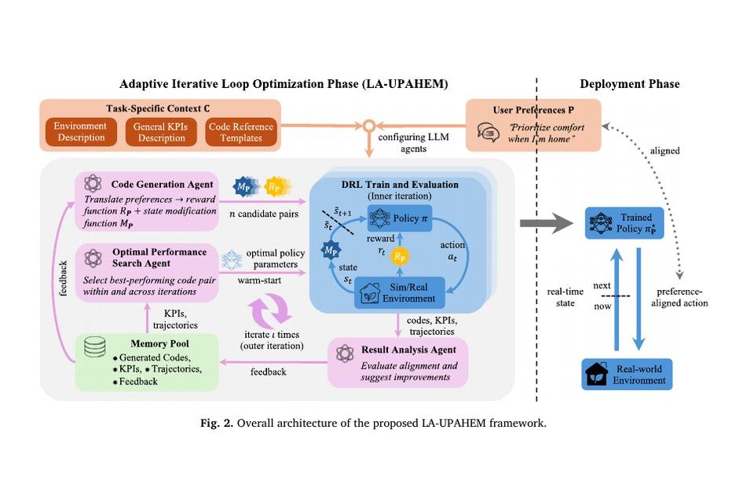
Explore the original visual ↗مشاهده تصویر اصلی ↗Adaptive home energy management to self-motivated user preferences via iterative LLM-augmented reinforcement learning
Preferences, scheduling & planningترجیحات، زمانبندی و برنامهریزی
20 PDF pages · 1 file(s)Read reportمطالعه گزارش →02 Report availableگزارش آماده
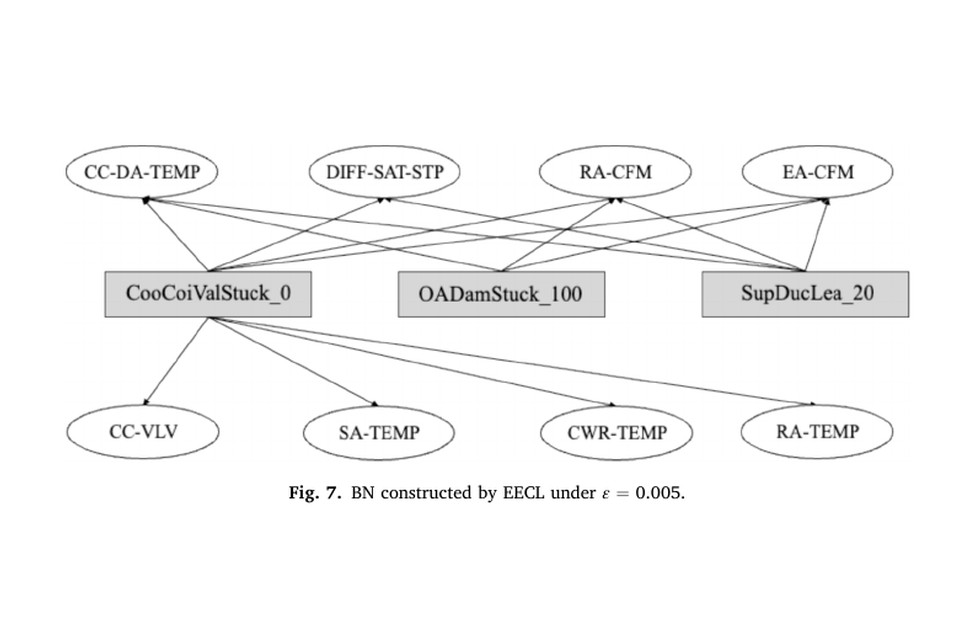
Explore the original visual ↗مشاهده تصویر اصلی ↗An entropy-based causality framework for cross-level faults diagnosis and isolation in building HVAC systems
Causal & probabilistic diagnosisتشخیص علّی و احتمالاتی
18 PDF pages · 2 file(s)Read reportمطالعه گزارش →03 Report availableگزارش آماده
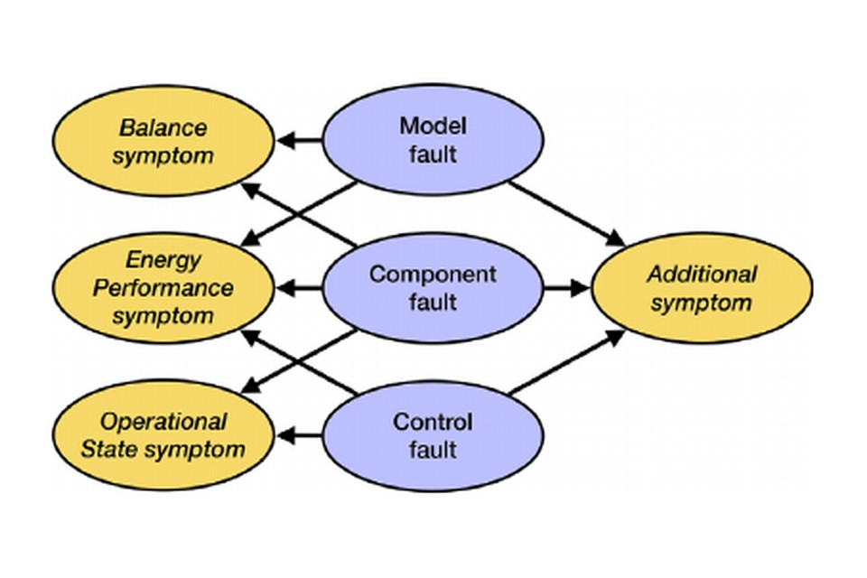
Explore the original visual ↗مشاهده تصویر اصلی ↗Whole building HVAC diagnostic Bayesian networks for comfort-related fault detection and diagnosis, application, evaluation and operational testing
Causal & probabilistic diagnosisتشخیص علّی و احتمالاتی
21 PDF pages · 2 file(s)Read reportمطالعه گزارش →04 Report availableگزارش آماده
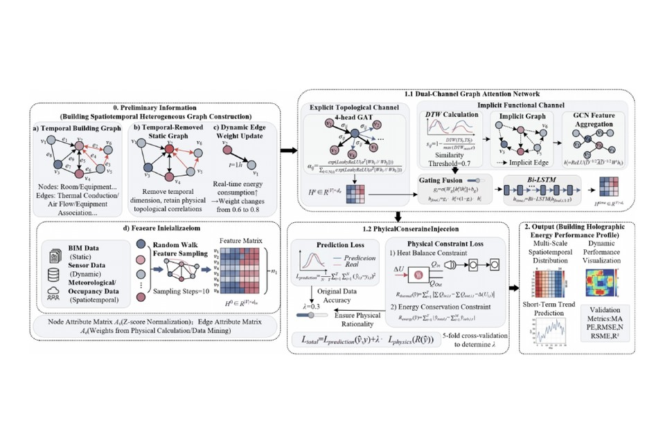
Explore the original visual ↗مشاهده تصویر اصلی ↗A data-driven iterative digital twin framework for dynamic building energy performance: Integrating virtual sensing and anomaly diagnosis
Digital Twins & safetyدوقلوی دیجیتال و ایمنی
27 PDF pages · 1 file(s)Read reportمطالعه گزارش →05 Report availableگزارش آماده
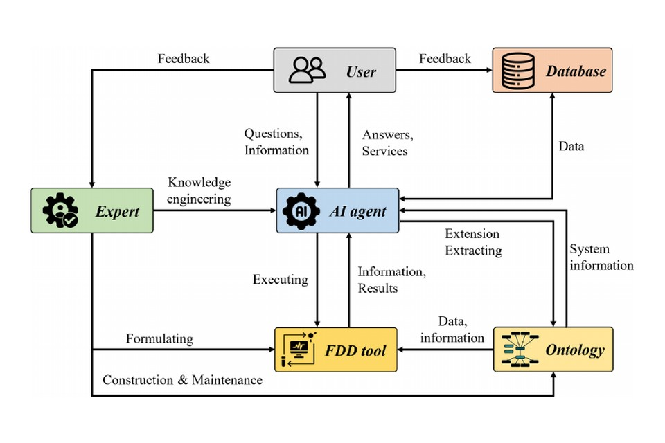
Explore the original visual ↗مشاهده تصویر اصلی ↗Agentic fault detection and diagnosis for building HVAC systems using AI agent, ontology, and diagnosis rules
Causal & probabilistic diagnosisتشخیص علّی و احتمالاتی
21 PDF pages · 2 file(s)Read reportمطالعه گزارش →06 Report availableگزارش آماده
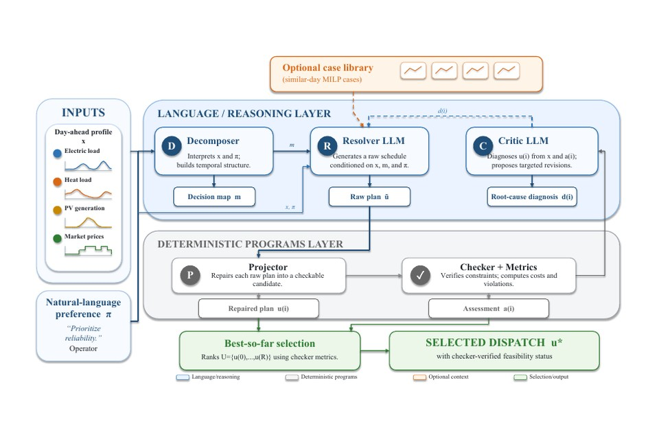
Explore the original visual ↗مشاهده تصویر اصلی ↗DARC A Constraint-Diagnostic LLM Agent Framework for Day-Ahead Dispatch of Campus-Level Integrated Energy Microgrids Under Natural-Language Preferences and Forecast Uncertainty
Preferences, scheduling & planningترجیحات، زمانبندی و برنامهریزی
25 PDF pages · 1 file(s)Read reportمطالعه گزارش →07 Report availableگزارش آماده
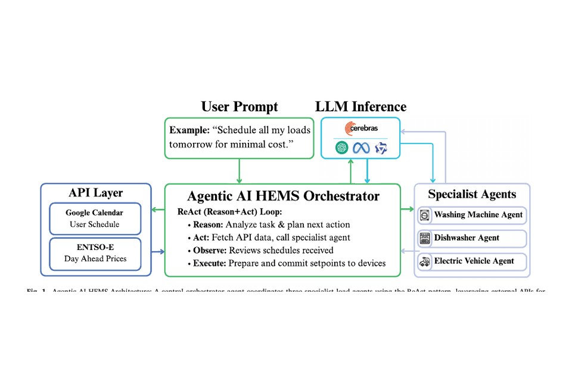
Explore the original visual ↗مشاهده تصویر اصلی ↗Agentic AI home energy management system: A large language model framework for residential load scheduling
Preferences, scheduling & planningترجیحات، زمانبندی و برنامهریزی
15 PDF pages · 1 file(s)Read reportمطالعه گزارش →08 Report availableگزارش آماده
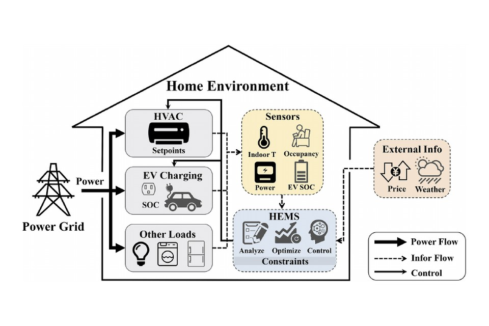
Explore the original visual ↗مشاهده تصویر اصلی ↗Human-in-the-loop preference calibration for home energy management
Preferences, scheduling & planningترجیحات، زمانبندی و برنامهریزی
25 PDF pages · 1 file(s)Read reportمطالعه گزارش →09 Report availableگزارش آماده
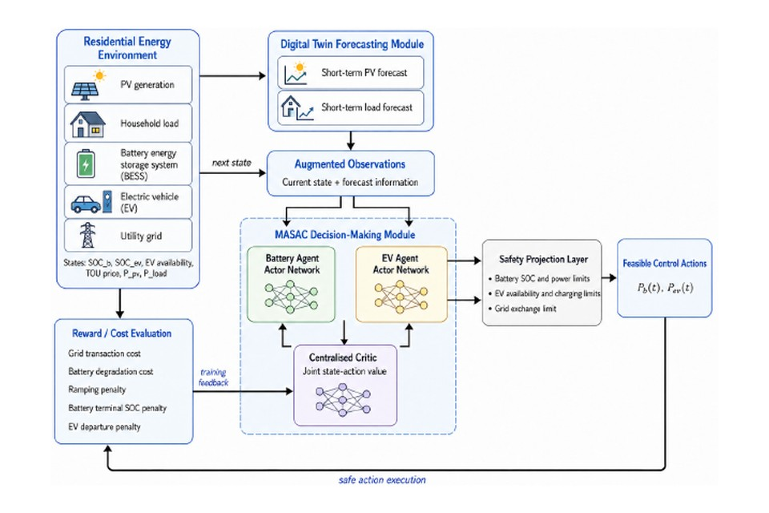
Explore the original visual ↗مشاهده تصویر اصلی ↗A Digital-Twin-Aided Safe Multi-Agent Reinforcement Learning Framework for Renewable-Integrated Residential Energy Management
Digital Twins & safetyدوقلوی دیجیتال و ایمنی
34 PDF pages · 1 file(s)Read reportمطالعه گزارش →10 Report availableگزارش آماده
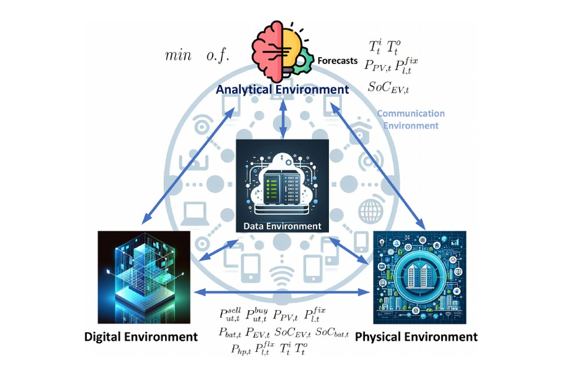
Explore the original visual ↗مشاهده تصویر اصلی ↗Digital twin assisted real-time energy management system for smart homes
Digital Twins & safetyدوقلوی دیجیتال و ایمنی
15 PDF pages · 2 file(s)Read reportمطالعه گزارش →11 Report availableگزارش آماده
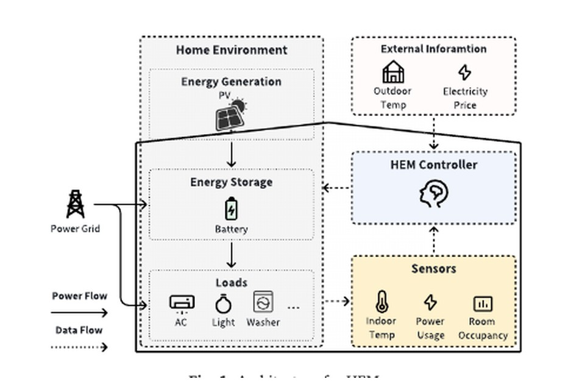
Explore the original visual ↗مشاهده تصویر اصلی ↗Large language model-enhanced home energy management with dynamic user preference elicitation and hierarchical data-sharing
Preferences, scheduling & planningترجیحات، زمانبندی و برنامهریزی
11 PDF pages · 1 file(s)Read reportمطالعه گزارش →12 Report availableگزارش آماده
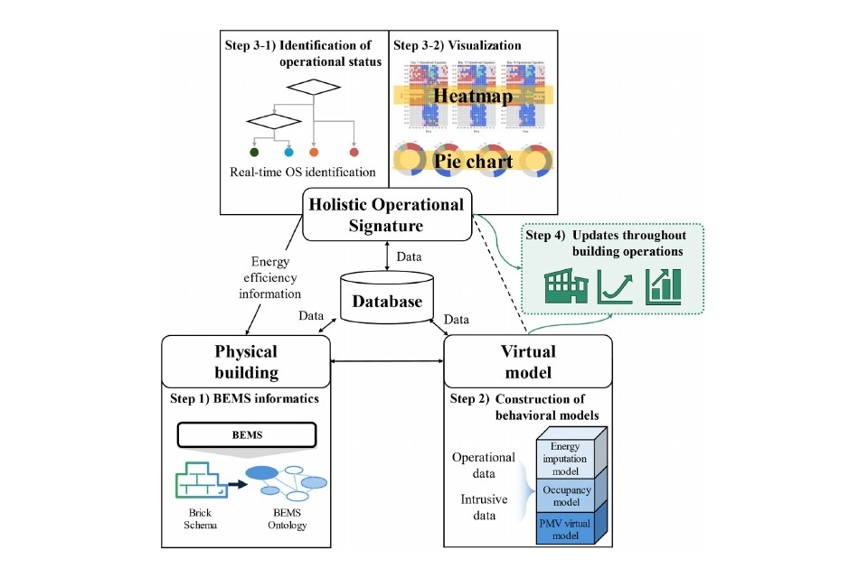
Explore the original visual ↗مشاهده تصویر اصلی ↗DT-BEMS: Digital twin-enabled building energy management system for information fusion and energy efficiency
Digital Twins & safetyدوقلوی دیجیتال و ایمنی
17 PDF pages · 1 file(s)Read reportمطالعه گزارش →13 Report availableگزارش آماده
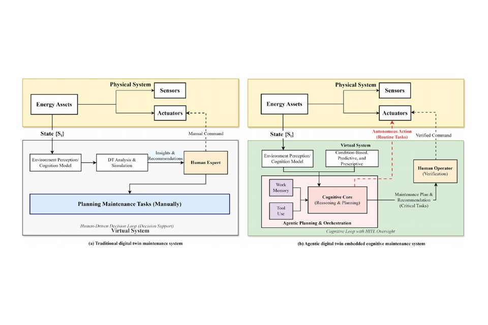
Explore the original visual ↗مشاهده تصویر اصلی ↗Agentic digital twin-embedded maintenance methodology for energy equipment A self-evolving operational paradigm
Digital Twins & safetyدوقلوی دیجیتال و ایمنی
17 PDF pages · 1 file(s)Read reportمطالعه گزارش →14 Report availableگزارش آماده
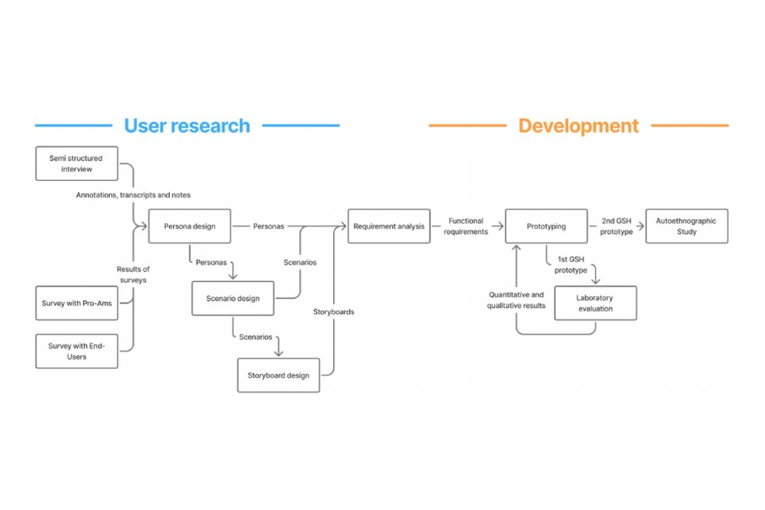
Explore the original visual ↗مشاهده تصویر اصلی ↗A smart home platform integrating an energy-aware digital twin and an LLM-enabled conversational agent
Digital Twins & safetyدوقلوی دیجیتال و ایمنی
25 PDF pages · 2 file(s)Read reportمطالعه گزارش →15 Report availableگزارش آماده
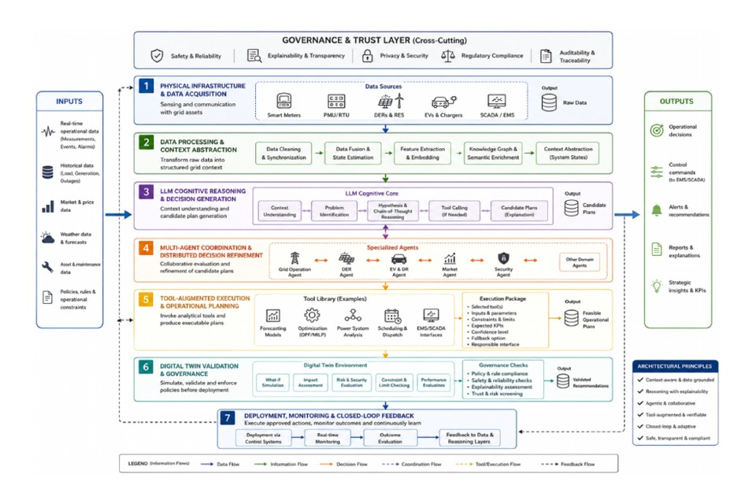
Explore the original visual ↗مشاهده تصویر اصلی ↗From systematic evidence to agentic architectures: A systematic review and framework for large language model–driven smart grids
Reviews & contextمرورها و زمینه پژوهش
26 PDF pages · 1 file(s)Read reportمطالعه گزارش →16 Report availableگزارش آماده
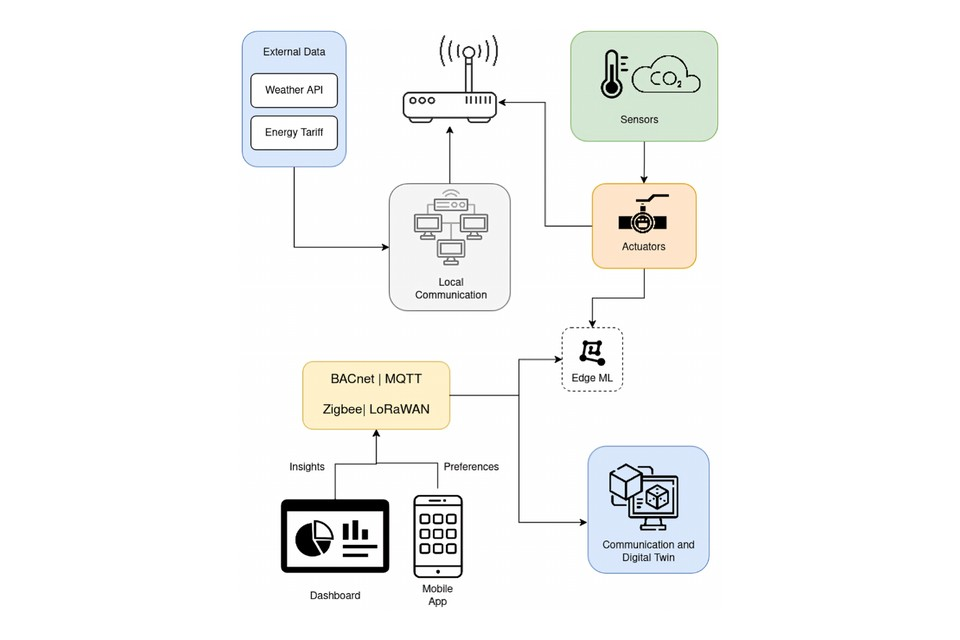
Explore the original visual ↗مشاهده تصویر اصلی ↗AI-Powered Building Ecosystems: A Narrative Mapping Review on the Integration of Digital Twins and LLMs for Proactive Comfort, IEQ, and Energy Management
Reviews & contextمرورها و زمینه پژوهش
44 PDF pages · 1 file(s)Read reportمطالعه گزارش →17 Report availableگزارش آماده
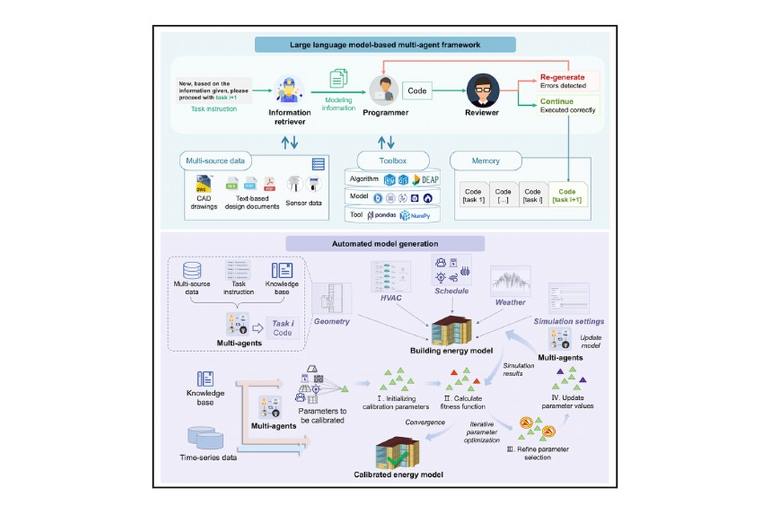
Explore the original visual ↗مشاهده تصویر اصلی ↗Automated building energy modeling for energy retrofits using a large language model-based multi-agent framework
Modeling & automationمدلسازی و خودکارسازی
22 PDF pages · 1 file(s)Read reportمطالعه گزارش →18 Report availableگزارش آماده
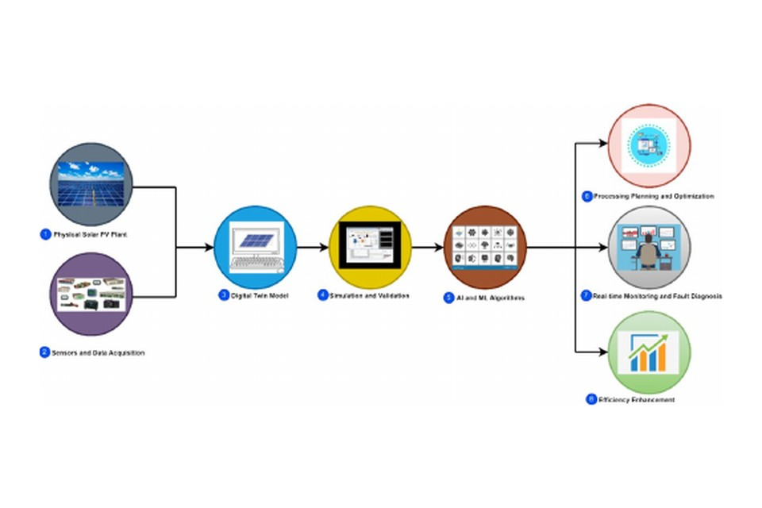
Explore the original visual ↗مشاهده تصویر اصلی ↗A review on digital twin application in photovoltaic energy systems: challenges and opportunities
Reviews & contextمرورها و زمینه پژوهش
26 PDF pages · 1 file(s)Read reportمطالعه گزارش →19 Report availableگزارش آماده
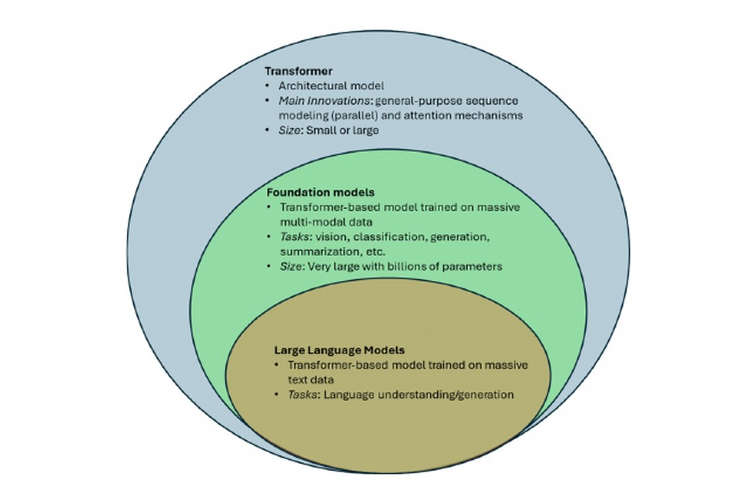
Explore the original visual ↗مشاهده تصویر اصلی ↗A systematic review of transformers and large language models in the energy sector, twards agentic digital twins
Reviews & contextمرورها و زمینه پژوهش
22 PDF pages · 1 file(s)Read reportمطالعه گزارش →20 Report availableگزارش آماده
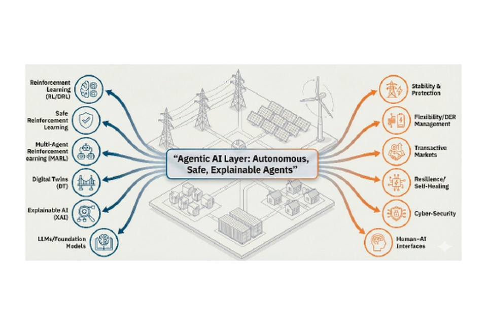
Explore the original visual ↗مشاهده تصویر اصلی ↗Agentic Artificial Intelligence for Smart Grids A Comprehensive Review of Autonomous, Safe, and Explainable Control Frameworks
Reviews & contextمرورها و زمینه پژوهش
35 PDF pages · 1 file(s)Read reportمطالعه گزارش →21 Report availableگزارش آماده
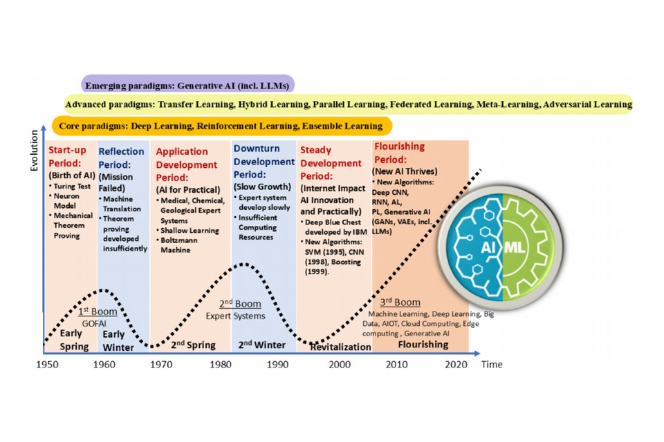
Explore the original visual ↗مشاهده تصویر اصلی ↗Artificial intelligence and machine learning for smart grids, from foundational paradigms to emerging technologies with digital twin and large language model-driven intelligence
Reviews & contextمرورها و زمینه پژوهش
35 PDF pages · 1 file(s)Read reportمطالعه گزارش →22 Report availableگزارش آماده
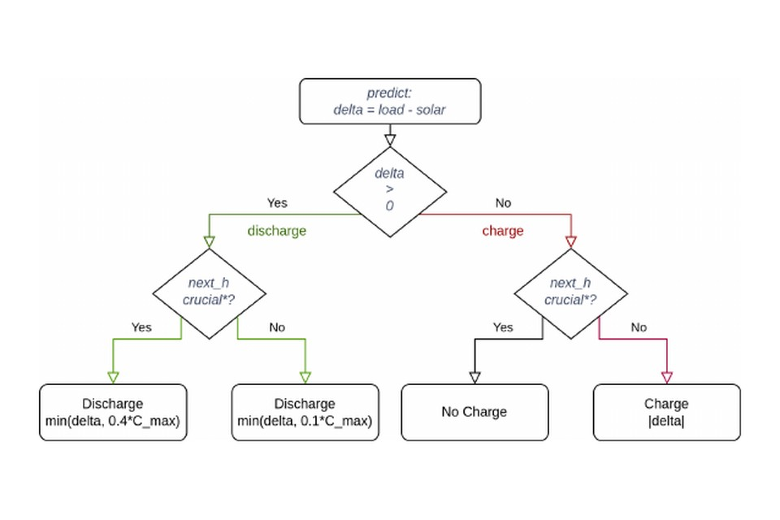
Explore the original visual ↗مشاهده تصویر اصلی ↗The CityLearn Challenge 2022: Overview, Results, and Lessons Learned
Simulation & benchmarkشبیهسازی و معیار ارزیابی
20 PDF pages · 2 file(s)Read reportمطالعه گزارش →23 Report availableگزارش آماده
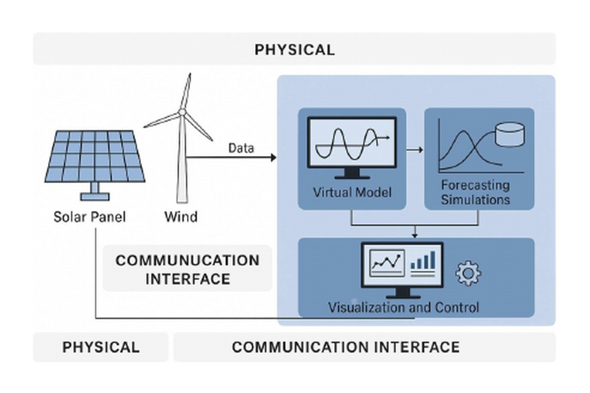
Explore the original visual ↗مشاهده تصویر اصلی ↗Digital twins in renewable energy systems A comprehensive review of
Reviews & contextمرورها و زمینه پژوهش
21 PDF pages · 1 file(s)Read reportمطالعه گزارش →